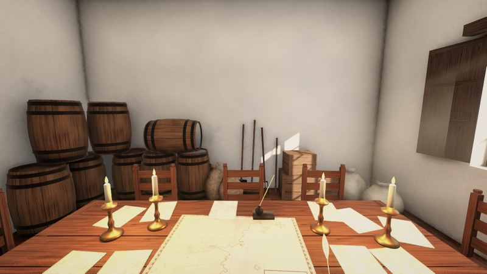
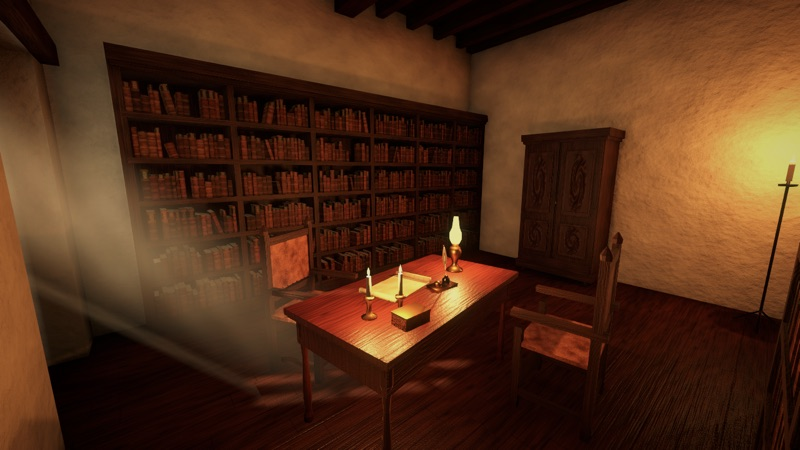
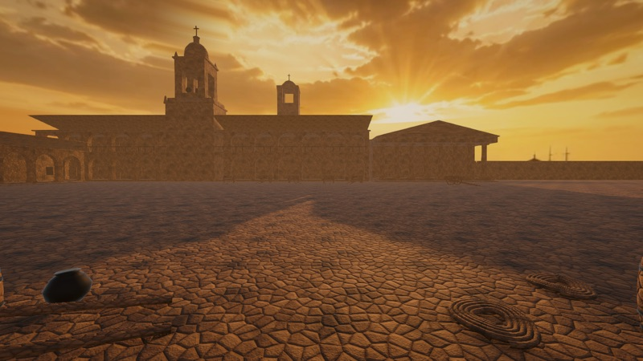

Sala Colonial
Sala encalada con vigas de madera, mesa de mapas, velas y un rincón de almacén.
Jugar
Biblioteca Colonial
Estudio con miles de libros, escritorio con lámpara de aceite y sol entrando por las persianas.
Jugar
Plaza Colonial
La plaza al atardecer: el Cabildo, la catedral, las recovas con arcos y el puerto.
Jugar